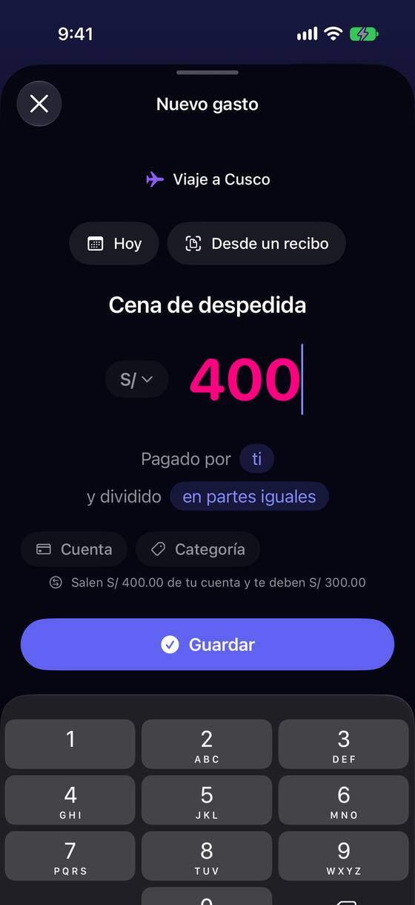
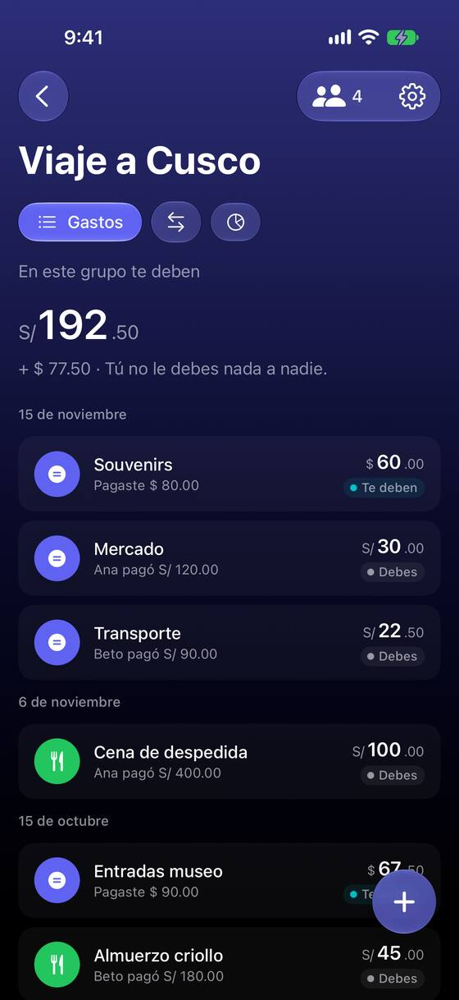

Una X o un deslizamiento tiran el gasto a medias, sin preguntar
Hoy
Capturas del simulador (app de origin/2.3, semillas de prueba). Pasos hoy: 1 toque pierde el gasto entero.




De dónde sale
- Captura Capturas 70 y 71: «Cena de despedida», S/ 400; un toque en la X y el detalle del grupo, sin rastro del gasto.
- Código
GroupExpenseFormView.swift:295-298: la X llama adismiss(); no hayinteractiveDismissDisabledni pregunta. - Captura Capturas 47 y 48: «Nuevo gasto» desde la lista abre en «Viaje a Cusco» (el primero) con el selector «Elegir grupo».
- Código
GroupExpenseComposerView.swift:57: el.iddel grupo rehace el formulario al cambiarlo;GroupsContainerView.swift:1240-1244: abre en el primer grupo elegible.
Las opciones
De 3 a 5 alternativas con el mismo caso. Desliza cada recorrido; el anillo cian marca dónde toca Lucía.
Preguntar antes de tirar lo escrito
Si hay algo escrito, la X y deslizar la hoja preguntan: «¿Descartar este gasto?» con «Descartar» y «Seguir editando». Sin nada escrito, cierra como hoy.
Se perderá «Cena de despedida» por S/ 400.00.
A favor
- El patrón de iOS para formularios: nadie se sorprende.
- Una línea de estado y una alerta.
En contra
- Un toque más para quien de verdad quería cerrar.
Guardar un borrador y ofrecer seguir
Cerrar no pregunta, pero guarda lo escrito. La próxima vez que se abre «Nuevo gasto» en ese grupo, una franja arriba ofrece «Seguir con “Cena de despedida”» o «Empezar de nuevo».
A favor
- Nunca se pierde nada, ni al cerrar la app.
- Cerrar sigue siendo un toque.
En contra
- Borradores que nadie retoma: hay que decidir cuándo caducan.
- Más estado que guardar y probar.
Cambiar de grupo conserva lo escrito
Desde «Nuevo gasto» de la lista, cambiar de grupo ya no rehace el formulario: descripción, importe y fecha se quedan; solo el reparto vuelve a «iguales», y lo dice. Y abre en el último grupo usado, no en el primero de la lista.
A favor
- Arregla la otra forma de perder el gasto (elegir el grupo después de escribir).
- Abrir en el último grupo ahorra un toque casi siempre.
En contra
- Hay que decidir qué pasa con lo que no existe en el otro grupo (personas, quién pagó).
Lado a lado
La última pantalla de cada recorrido, frente a hoy.
Se perderá «Cena de despedida» por S/ 400.00.
Comparación
| Opción | Pasos para el caso (maqueta) | Esfuerzo | Riesgo | Reabre |
|---|---|---|---|---|
| Hoy | 1 toque pierde el gasto entero. | — | — | — |
| F1 · Preguntar antes de tirar lo escrito | 1 toque más para descartar; 0 gastos perdidos | bajo | bajo | — |
| F2 · Guardar un borrador y ofrecer seguir | 1 toque para recuperar | medio | medio | — |
| F3 · Cambiar de grupo conserva lo escrito | 2 toques para cambiar de grupo sin perder nada | medio | bajo | — |
Lente de perfiles
Perfiles simulados, no entrevistas Los siete perfiles de la revisión del usuario nuevo, usados como lentes. riesgo alto de trabarse · medio · bajo.
| Perfil | Hoy | F1 | F2 | F3 |
|---|---|---|---|---|
| P1 · Migrante de Excel | — | — | — | — |
| P2 · Principiante abrumado | se asusta | — | una franja más | — |
| P3 · Anotador rápido que no lee | cierra sin mirar | — | no le frena | — |
| P4 · Experto de otra app (Splitwise, Tricount) | — | lo esperado | — | — |
| P5 · Llega por una invitación de grupo | — | — | — | — |
| P6 · Varias monedas y tarjeta | — | — | — | — |
| P7 · Texto grande, a veces en iPad | toques imprecisos | — | — | — |
Recomendación: F1
Preguntar es el patrón de iOS, cuesta poco y cierra el problema medido. F3 conviene cuando se toque el selector de grupo de «Nuevo gasto». F2 es más ambiciosa y pide decidir cuándo caducan los borradores.
Qué decide Jürgen
- ¿La X y deslizar preguntan antes de descartar un gasto a medias (F1)? ¿Lo mismo en «Apuntar pago» y «Saldo inicial»?
- ¿Cambiar de grupo conserva lo escrito y «Nuevo gasto» abre en el último grupo usado (F3)?
Revisión por vistas 2.3 · Grupos. Maquetas en HTML con datos ficticios: no son la app. Pasos contados sobre las maquetas; los de «Hoy», en el simulador o en el código citado.